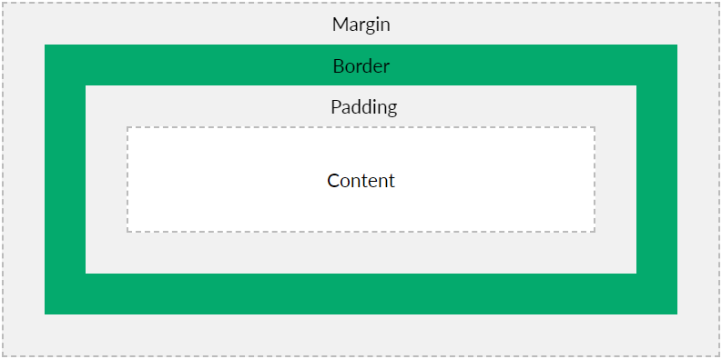

For the sake of this explanation, assume that there is a box with some random text inside it.
The border is essentially the sorrounding black line that holds the content(text) and the space inside. It is the space that lies between the margin and the padding. We will get to them. By default the border is hidden, but it can manipulated by changing it's thickness, height, width, colour and many other characteristics with CSS.
The margin is basically the space outside the border we just discussed. In other words it is the area outside of the element. Because of this, it is used to alter the space between elements and also effectively move them up, down, left and right. it's the gap. The size of the margin on each side can be changed individually. On the image below you can see how the box has now shifted from the corner. That's because the size of the margin was increase from 0px to 40px on all four sides. consequently, this causes the element to move down and out from the corner by 40px on each side. This margin is also present on the right and bottom sides.
The padding is the space between the elements border and it's content which is the text in this case. It will determine how well the content sits and fits inside. Just like with margins, the size of the margin on each side can be changed individually. increasing the padding will ultimately increase the size of the element but will preserve the size of the content(text) inside. Notice how in the image below the space between the the text and the border has increased. This is because the padding on all four sides was increased from 0px to 40px which subsequently increase the size of the element(border) around the text aswell.
The image below portrays how the border, margin and padding co-exist and fit around the content. All of these concepts are extremely important in CSS as they are the tools that allow you manage the spacing inside the element itself and also the spacing between different elements.
